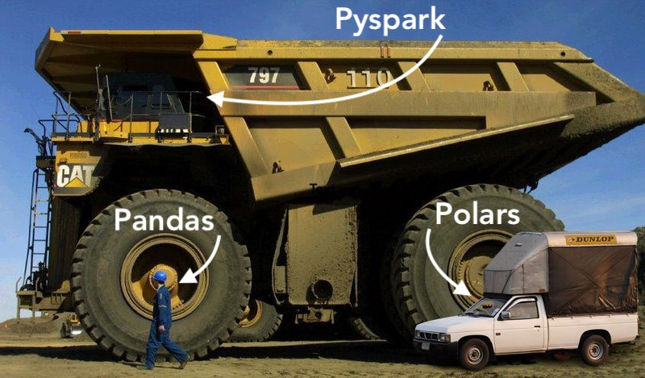

Data Sizes, Formats, and Tools
Day 2: Parquet, Arrow, Polars, PySpark, and your first two challenges
Today
- Small, medium, and big data
- Parquet: how we store data on disk
- Arrow: how we hold data in memory
- Polars and PySpark
- Challenge: data wrangling and visualization
- Challenge: team proposal
Small, medium, and big data
What makes data “big”?
Volume
Size on disk. If it fits and runs on your laptop, it isn’t big. Today, hundreds of GB signals big.
Variety
Many types of data: photos, video, spatial, time series, text. Each needs its own storage and retrieval.
Velocity
How fast data arrives: sensors at thousands of readings a second, card transactions.
Usually two of the three earn the word “big.”
Pick the right truck

Small, medium, big
| Small | Medium | Big | |
|---|---|---|---|
| Size | Fits easily in memory | Up to tens of GB | Hundreds of GB and up |
| Runs on | Your laptop | One strong machine | A cluster |
| Tool | pandas | Polars (or DuckDB) | PySpark |
| Vehicle | Pickup truck | Pickup, driven well | Mining dump truck |
Our class data stays under 1 TB in total, with the largest tables around 100 GB.
Stay in the dump truck
Some of our data will be small enough for Polars or pandas. You’ll be tempted to switch.
Don’t. The point is to learn to drive the big truck. You’ll need to drive it in industry.
Parquet: data on disk
Rows or columns?
What Parquet gives you
- Columnar: read only the columns you need.
- Compressed: similar values sit together, so they compress well.
- Typed schema: numbers stay numbers. Nested lists and structs stay nested.
- Statistics: min and max per chunk let tools skip data a filter can’t match.
- Open standard: Polars, pandas, DuckDB, Spark, R, and Databricks all read it.
At scale
| Data | Size on S3 | Query time | Data scanned | Cost |
|---|---|---|---|---|
| CSV | 1 TB | 236 s | 1.15 TB | $5.75 |
| Parquet | 130 GB | 6.78 s | 2.51 GB | $0.01 |
| Savings | 87% smaller | 34× faster | 99% less | 99.7% cheaper |
Source: Databricks, “What is Parquet?”
On your challenge data
81 MB Three months of SafeGraph patterns as CSV
11.7 MB The same patterns as Parquet, with nested columns kept typed
2 ms To read 2 of 22 columns, vs. 143 ms for the whole file
In CSV, nested fields like popularity_by_hour are JSON text you have to parse. In Parquet they’re already lists.
Arrow: data in memory
Parquet on disk, Arrow in memory
Apache Parquet
A file format. Compressed and encoded for storage. Built to be small and fast to scan.
Apache Arrow
A memory format. Columnar and uncompressed. Built for fast computation.
disk: .parquet → memory: Arrow columns → Polars · pandas · DuckDB · Spark
Why Arrow matters
- One shared layout. Tools that speak Arrow can hand data to each other without copying or converting it.
- Polars is built on Arrow. Its DataFrames are Arrow columns.
- Spark uses Arrow to move data to and from pandas (
toPandas(), pandas UDFs). - Columnar in memory means fast operations on whole columns at once.
Parquet is how data rests. Arrow is how data moves and gets computed.
Polars and PySpark
The same question in both
Total visits to religious buildings by state:
from pyspark.sql import functions as F
places = spark.read.parquet("places.parquet")
patterns = spark.read.parquet("patterns.parquet")
(places
.filter(F.col("top_category") == "Religious Organizations")
.join(patterns, on="placekey")
.groupBy("region")
.agg(F.sum("raw_visit_counts").alias("visits"))
.show())Both return GA: 4,476,806 and UT: 1,157,708 on the challenge data.
Both are lazy
Nothing runs until you ask for a result (.collect() in Polars, .show() in Spark). First, the tool plans the query:
The planner read 5 of 47 columns and filtered while scanning. That’s Parquet and a lazy engine working together.
When to use which
Polars
- One machine, many cores
- Very fast on medium data
- Built on Arrow
- Our first challenge
PySpark
- A cluster of machines
- Scales past one computer’s memory
- Runs on Databricks
- Most of the semester
The APIs are close. What you learn in Polars carries over to PySpark.
Challenge: wrangling and visualization
The challenge
Compare church buildings in Utah and Georgia using SafeGraph foot-traffic data.
- Tools: Polars and Plotly Express
- Answer at least 3 of 4 questions, for example:
- iPhone vs. Android visitors to Latter-day Saint buildings in each state
- Hourly patterns of Latter-day Saint vs. other churches
- Brands visited the same day by each group
- Due: 9/24/2026 · Challenge repository
The data
| Folder | What it is | Use it for |
|---|---|---|
csv |
Raw SafeGraph files | Exploring |
parquet_derived |
Nested fields split into their own tables | Exploring |
parquet |
Close to the raw structure; matches Databricks | Your final code |
Your final code must run on the parquet folder.
What each answer needs
1 Code for the wrangling and the chart
2 A visualization
3 The first five rows of the data you charted
4 A few sentences on the insight
It is a report, not a vomit of code with poorly developed visuals.
How to work and submit
Rules
- Talk with your group, but don’t look at each other’s code.
- Submit a short
.pdfor.htmlreport plus the.pyscript.
Environment: marimo edit, or docker compose up and open localhost:8080.
GitHub
- Fork the challenge repository.
- Add a folder
LASTNAME_FIRSTINITIALwith the files fromhathaway_J. - Open a pull request.
Canvas: upload your .pdf or .html.
Challenge: team proposal
The goal
Data-as-a-Service (DaaS) companies sell rich, detailed data about places and time.
Your team proposes a data product: a predictive model that non-technical employees can use, built from DaaS data through Dewey and the US Census API.
Requirements
- PDI C-Stores (convenience store data) is the driving dataset.
- Don’t target one brand or company.
- The model outputs a probability (classification) or a count (regression).
- Define a clear place (a county or city), time span (last year by month), unit of analysis, and client (a county government, donut shops).
- Explain how you’ll use the Census API.
- Extra weight for adding data beyond one Dewey provider.
Statement of work
No more than two pages or 5 to 8 slides, with:
- Team member names and majors
- The business need and why it’s valuable
- The data format, with some descriptive visuals
- How you’ll use ML/AI in the application
- What counts as a successful product
Submit: each team forks the repository and adds a TEAMNAME folder. Each student uploads the .pdf or .html to Canvas. Due: 9/29/2026
Remember from day 1
This proposal is a decision-point presentation. The class will pick an approach.
- Make your point early, then justify it.
- Know your data source well enough to answer almost any question about it.
- Practice the five whys before you present.
This week
- Fork the wrangling challenge and get marimo or Docker running.
- Load
places.parquetandpatterns.parquetwith Polars. - Form your team and start talking about a business need.
Discuss
Who would pay for a prediction made from convenience-store data?
Name a client, a place, and a unit of analysis.